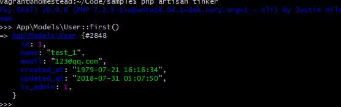

删除用户
接下来我们完成删除用户的功能, 删除用户的操作只能由管理员来操作, 因此下面需要为用户表加上管理员字段, 以便来判断用户是否为管理员, 然后将管理员身份授权给某个用户, 让其可以删除用户, 最后我们还要在用户列表上加上删除按钮, 只有当管理员账号登录时才能看到删除按钮并对用户进行删除
管理员
我们需要生成一个迁移文件来为用户表新增管理员字段, 在生成迁移文件时, 带上 --tanle 选项可以为制定数据表生成迁移文件. 现在让我们运行以下命令来为用户表新增管理员字段
$ php artisan make:migration add_is_admin_to_users_table --table=users
我们需要在新建的迁移文件中为用户添加一个 is_admin 的布尔值字段类判断用户是否为管理, 该字段默认为 false , 在迁移文件执行时, 对该字段进行创建, 回滚时需要对该字段进行移除, 迁移文件最终如下:
database/migrations/[timestamp]_add_is_admin_to_users_table.php
<?php
use Illuminate\Support\Facades\Schema;
use Illuminate\Database\Schema\Blueprint;
use Illuminate\Database\Migrations\Migration;
class AddIsAdminToUsersTable extends Migration
{
/**
* Run the migrations.
*
* @return void
*/
public function up()
{
Schema::table('users', function (Blueprint $table) {
$table->boolean('is_admin')->default(false);
});
}
/**
* Reverse the migrations.
*
* @return void
*/
public function down()
{
Schema::table('users', function (Blueprint $table) {
$table->dropColumn('is_admin');
});
}
}
可以看到我们使用了 dropColumn 方法来对指定字段进行移除
在迁移文件创建成功之后, 我们还需要运行数据库迁移
$ php artisan migrate
现在应用中还不存在管理员身份的用户, 让我们对数据填充文件进行更改, 将第一个生成的用户设置为管理员
database/seeds/UsersTableSeeder.php
<?php
use Illuminate\Database\Seeder;
use App\Models\User;
class UsersTableSeeder extends Seeder
{
/**
* Run the database seeds.
*
* @return void
*/
public function run()
{
$users = factory(User::class)->times(50)->make();
User::insert($users->makeVisible(['password', 'remember_token'])->toArray());
$user = User::find(1);
$user->name = 'Aufree';
$user->password = bcrypt('password');
$user->is_admin = true;
$user->save();
}
}
我们在 each 方法的闭包函数中对第一位用户的指定字段进行了赋值操作, 接下里我们还需要修改用户模型工厂, 将其他生成的假用户管理员字段设置为 false
database/factories/UserFactory.php
<?php
use Faker\Generator as Faker;
/*
|--------------------------------------------------------------------------
| Model Factories
|--------------------------------------------------------------------------
|
| This directory should contain each of the model factory definitions for
| your application. Factories provide a convenient way to generate new
| model instances for testing / seeding your application's database.
|
*/
$factory->define(App\Models\User::class, function (Faker $faker) {
$date_time = $faker->date . ' ' . $faker->time;
static $password;
return [
'name' => $faker->name,
'email' => $faker->safeEmail,
'is_admin' => false,
'password' => $password ?: $password = bcrypt('secret'),
'remember_token' => str_random(10),
'created_at' => $date_time,
'updated_at' => $date_time,
];
});
最后我们队数据库进行重置和填充
$ php artisan migrate:refresh --seed
现在如果我们在 tinker 中进行查看, 可以看到第一位用户已经被设置为管理员
$ php artisan tinker

destory 动作
删除用户的动作, 有两个逻辑需要提前考虑
- 只有当前登录用户才能执行删除操作
- 删除的用户对象不是自己,(即使是管理员也不能删除自己)
我们在开发更新用户功能的时, 已经创建了用户授权策略类, 让我们接着对该授权策略进行编辑, 加上 destory 删除用户动作的相关授权
app/Policies/UserPolicy.php
<?php
namespace App\Policies;
use Illuminate\Auth\Access\HandlesAuthorization;
use App\Models\User;
class UserPolicy
{
use HandlesAuthorization;
public function update(User $currentUser, User $user)
{
return $currentUser->id === $user->id;
}
public function destroy(User $currentUser, User $user)
{
return $currentUser->is_admin && $currentUser->id !== $user->id;
}
}
我们使用了下面这行代码来指明, 只有当前用户拥有管理员权限而且删除的用户不是自己时, 才能显示链接
$currentUser->is_admin && $currentUser->id !== $user->id;
laravel 授权策略提供了 @can blade 命令, 允许我们在 blade 模板中做授权判断, 接下来, 我们利用 @can 指令, 在用户列表页加上只有管理员才能看到的删除用户按钮
resources/views/users/_user.blade.php
<li>
<img src="{{ $user->gravatar() }}" alt="{{ $user->name }}" class="gravatar"/>
<a href="{{ route('users.show', $user->id )}}" class="username">{{ $user->name }}</a>
@can('destroy', $user)
<form action="{{ route('users.destroy', $user->id) }}" method="post">
{{ csrf_field() }}
{{ method_field('DELETE') }}
<button type="submit" class="btn btn-sm btn-danger delete-btn">删除</button>
</form>
@endcan
</li>
添加页面样式优化
resources/assets/sass/app.scss
.
.
.
/* Users index */
.
.
.
.delete-btn {
float: right;
position: relative;
right: 0;
}
在管理员点击删除用户按钮之后, 删除动作会映射到用户控制器上面的 destroy 动作上, 让我们为控制器天添加基本的 用户删除动作
app/Http/Controllers/UsersController.php
<?php
namespace App\Http\Controllers;
.
.
.
class UsersController extends Controller
{
.
.
.
public function destroy(User $user)
{
$user->delete();
session()->flash('success', '成功删除用户！');
return back();
}
}
destroy 动作中, 我们首先根据路由发送过来的用户 id 进行数据查找, 查找到之后再调用 Eloquent 模型提供的 delete 方法对用户资源进行删除, 成功删除之后再页面顶部进行消息提示, 最后将用户重定向到上一次进行 删除的页面, 即用户列表页
有上面的代码, 管理员已经可以进行删除操作了, 并且我们使用了 Auth 黑名单, 也就是说除了 except 数组中指定的动作, 其他的动作必须登陆后才能操作
app/Http/Controllers/UsersController.php
<?php
namespace App\Http\Controllers;
.
.
.
class UsersController extends Controller
{
public function __construct()
{
$this->middleware('auth', [
'except' => ['show', 'create', 'store', 'index']
]);
.
.
.
}
另外还需要注意的一点是, 现在的删除动作是对所有的登录用户都开放的, 为此我们需要对删除动作加上授权策略, 只有已登录的管理员用户才能进行删除操作.
app/Http/Controllers/UsersController.php
<?php
namespace App\Http\Controllers;
.
.
.
class UsersController extends Controller
{
.
.
.
public function destroy(User $user)
{
$this->authorize('destroy', $user);
$user->delete();
session()->flash('success', '成功删除用户！');
return back();
}
}
至此, 用户删除功能完成